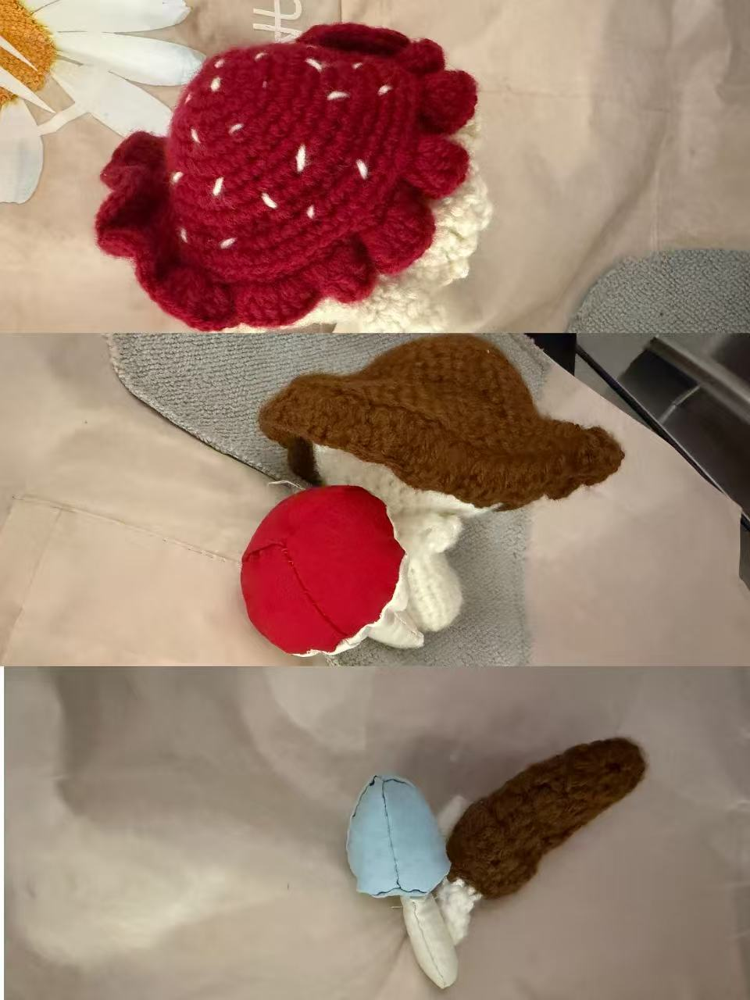

Main Content Article
Project Challenge & Solution
This project explores the use of textile materials to create a decorative apron. The design combines fabric with handmade mushroom details. This is the first time I do crochet.
Results & Key Outcomes
The final work is a decorative and also realistic apron with three-dimensional mushroom elements.